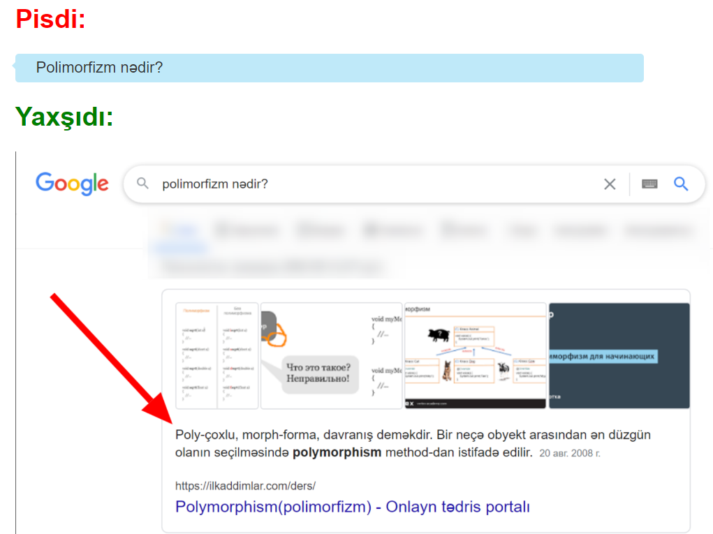

Xahiş edirik, Google-dan istifadə etməyi öyrənin!
Söhbətlərdə/forumlarda bu tipli suallar verməyin:
Belə sualları Google vasitəsi ilə axtarmaq olar lazımdır!
Google-dan istifadə etmək bu deməkdir:
- Google (və ya başqa axtarış sistemini) açmaq
- Öz sualınızı daxil etmək.
- Başa düşürəm, amma niyə belə sualları söhbətlərdə/forumlarda verməyim?
- İnanın, Sizin suallarınızın 99% kimsə çoxdan cürbəcür saytlarda, forumlarda verib. Bu deməkdir ki cavabları internetdə var. Ona görə, öz sualınızı Google (vəya digər axtarış sisteminə) verməklə, Siz cavabınızı daha tez alacaqsınız, habelə, başqa adamları narahat etməyəcəksiniz.
- Demək istəyirsiniz ki sualları söhbətlərdə/forumlarda vermək səhvdir/tərbiyəsizlikdir/pisdir?
- Tamamilə yox. Əgər sizin sualınız varsa, onu birinci Google-da axtarın, və cavabını tapmadığınız halda,
Yandex-də axtarın söhbətlərdə/forumlarda soruşun.
İşin mahiyyəti bir şəkildə:
